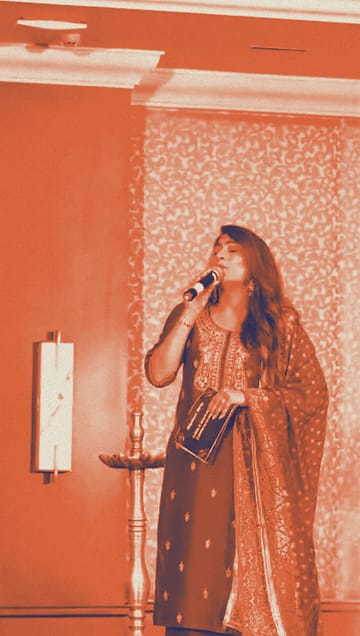
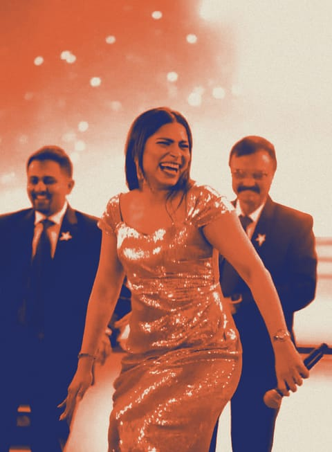
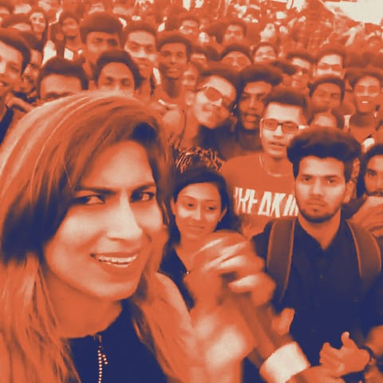
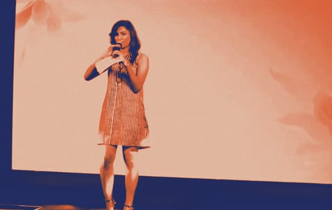

Feature 02 फ़ीचर · pp. 8–11
The room answers
She calls, the room answers. Three clips and a photograph, 2025 back to 2017. Sound on tap.
दर्शकों का जवाब

Plays in full colour, with automatic captions. पूरे रंग में, स्वचालित कैप्शन के साथ।


Plays in full colour, with automatic captions. पूरे रंग में, स्वचालित कैप्शन के साथ।

Plays in full colour, with automatic captions. पूरे रंग में, स्वचालित कैप्शन के साथ।